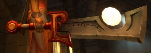
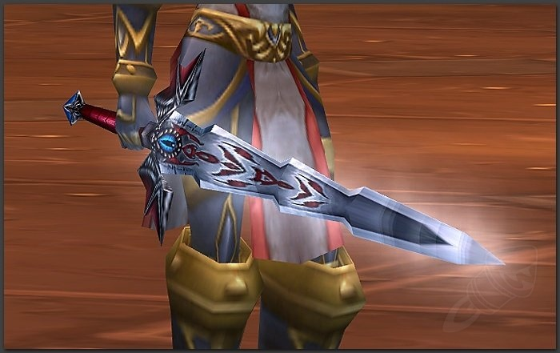
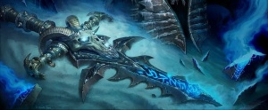

The Dreadnaught Pauldrons are the Tier 3 plate shoulder armor for warriors and gives bonuses to strength, stamina, block, and overall defense.

*Added in patch 1.11.1 "Shadow of the Necropolis"
Made by Axel
The Ashbringer is a powerful sword named for its ability to slaughter the undead and leave nothing but ash in its wake. The legendary sword was crafted by King Magni Bronzebeard on the Great Anvil of Ironforge, and was infused with the Holy Light. Ashbringer shares its name with its original wielder, Alexandros Mograine , the former Highlord of the Order of the Silver Hand who employed the title of The Ashbringer.
*Added in patch 7.0.3 "Legion"
Baron Rivendare's Runeblade is a powerful bastard sword. It is Baron Rivendare's most prized possession, next to his undead steed, Deathcharger. The finely-crafted blade bears a false hilt and is etched with necromantic runes all down the blade. The blade pulses with cold power, seeming all too ready to draw blood from enemies. In anyone else's hands, the blade is simply a bastard sword. In the Baron's hands, however, the weapon becomes a keen frost/unholy bastard sword. The powerful blade also grants anyone who wields the blade fast healing. The sword also allows any wielder to cast Bloodlust on themselves.
*Added in patch 1.11.1 "Shadow of the Necropolis"
Frostmourne was the mourneblade of the Lich King. A fearsome, rune-inscribed two-handed longsword, it possessed the power to shatter and imprison the souls of its victims and could remake the living into mindless undead. Frostmourne was thrust from the Frozen Throne by the Lich King Ner'zhul and was taken up by Arthas Menethil in the wastes of Northrend during the Third War. It was wielded by Arthas both during his time as a death knight and as Lich King until it was destroyed by Tirion Fordring; in that time, the blade spilled the blood of kings, destroyed nations, and inflicted scars on the world that remain to this day. Few weapons have shaped modern history as much as Frostmourne. During the third invasion of the Burning Legion, a death knight hero reforged the shards of the blade into the Blades of the Fallen Prince.
*Added in patch 3.3.5 "Defending the Ruby Sanctum"
The Dreadnaught Pauldrons are the Tier 3 plate shoulder armor for warriors and gives bonuses to strength, stamina, block, and overall defense.
*Added in patch 1.11.1 "Shadow of the Necropolis"